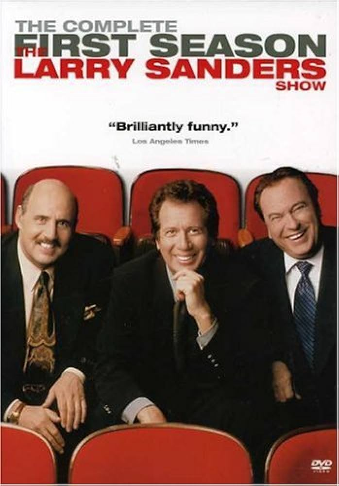
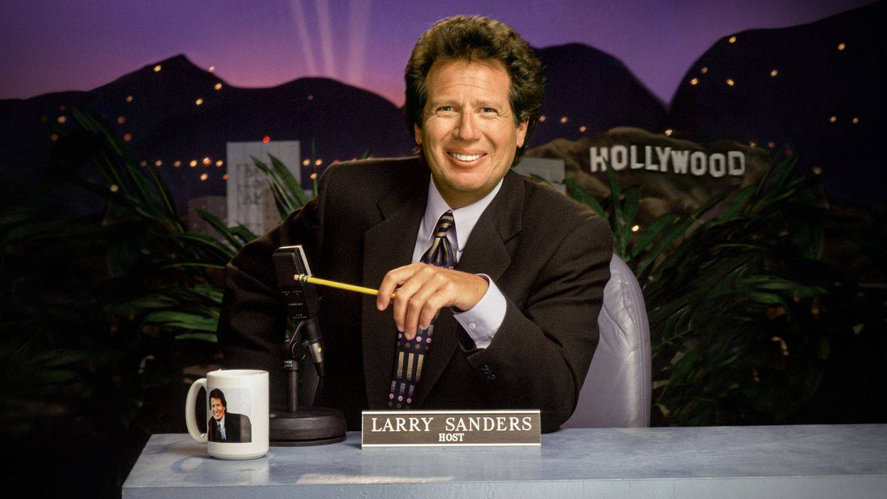
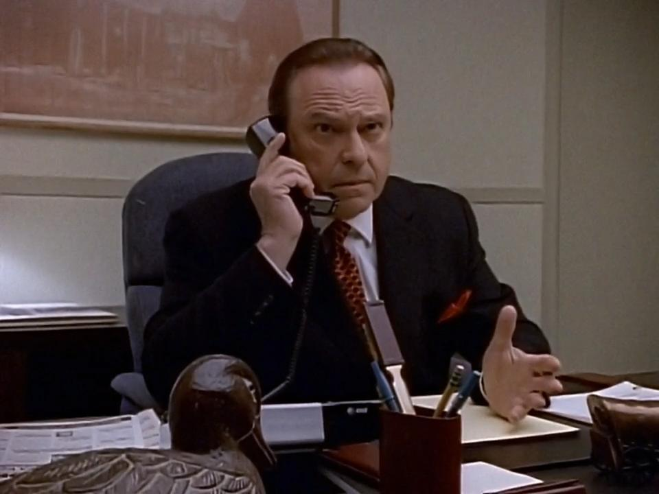
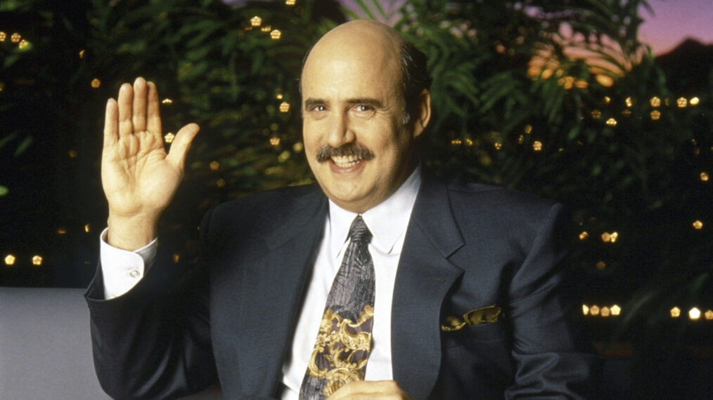

"The Larry Sanders Show" is this behind-the-scenes look at a made-up late-night talk show. You've got Larry hosting, producer Artie running the show, and Hank Kingsley as the sidekick. It's all about their wild run-ins with celebs, network bigwigs, and the everyday craziness of TV life. Totally a laugh trip through showbiz!
CharactersLarry Sanders Played by: Garry Shandling Arthur  Played by: Rip Tom Hank Kingsley  Played by: Jeffrey Tambor |